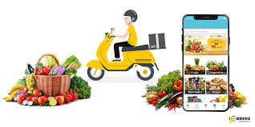

Key Features
Flask User Authentication
A Flask application that provides user authentication features.
- User registration
- Login
- Logout
- Password reset

Online Recruitment Portal MVP
An MVP of an online recruitment portal.
- Job listings
- Job application submissions
- Resume uploads
- Employer dashboard

Smart Grocery List App
An application to manage grocery lists intelligently.
- Add, remove, and edit items
- Automatic categorization
- Integration with online stores
- Reminder notifications